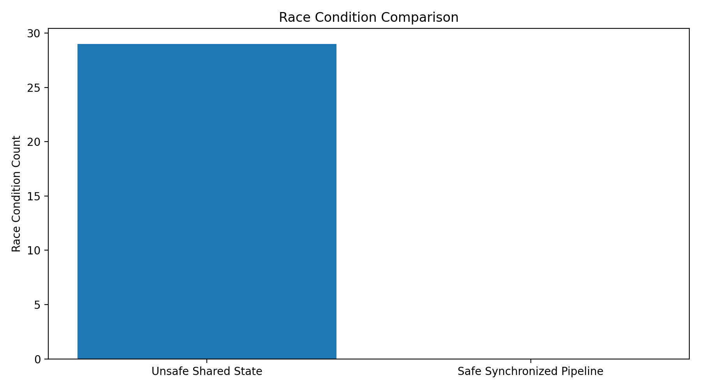
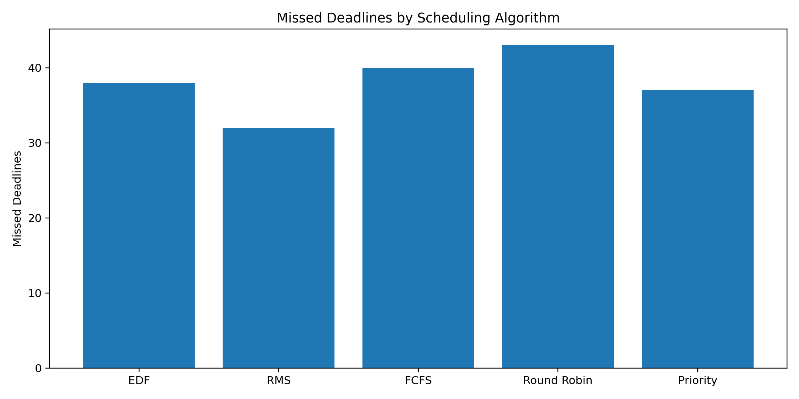
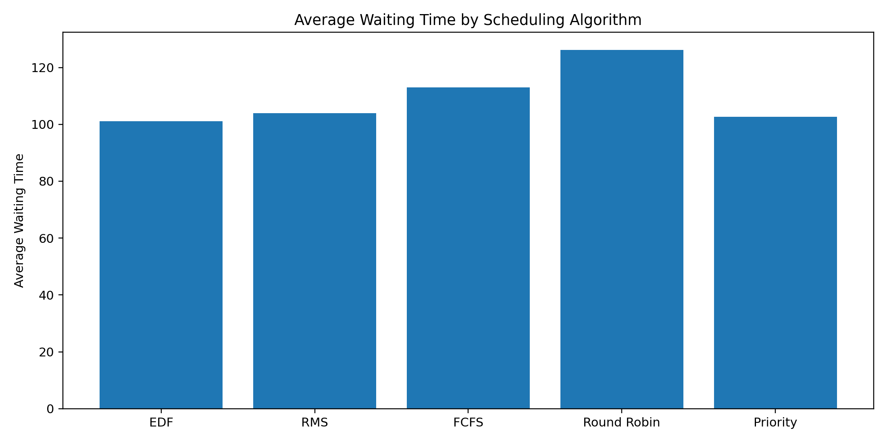
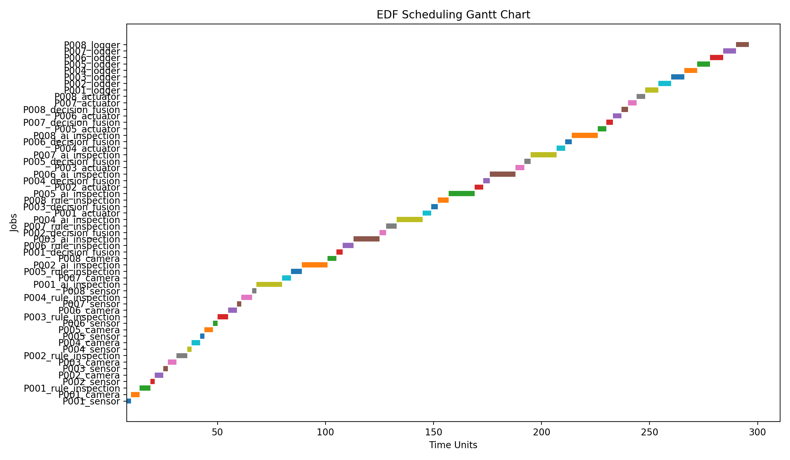
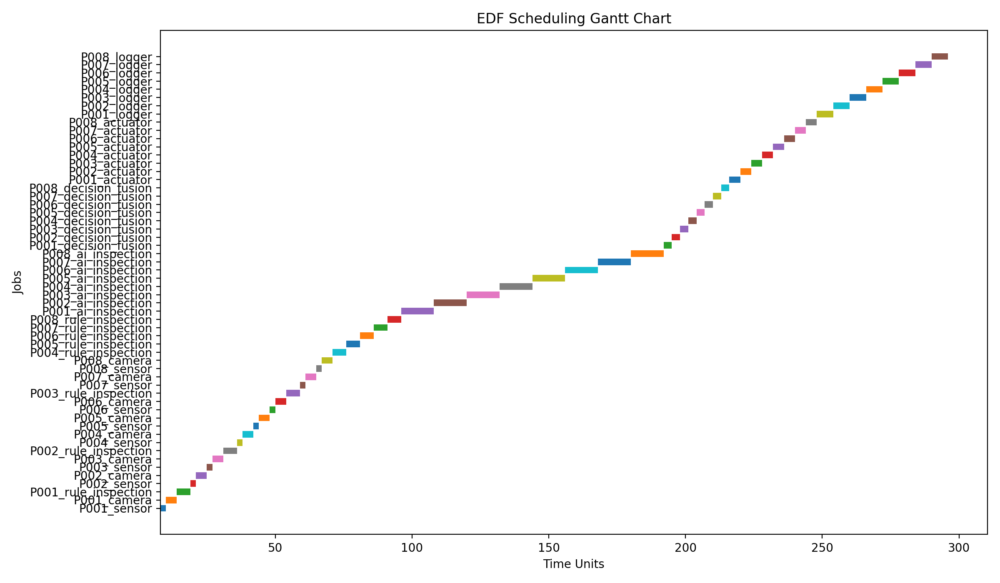

| Sl. No. | Student Name | USN |
|---|---|---|
| 1 | Yashwanth J | 1BM24AI196 |
| 2 | Vrishin Dutt CG | 1BM24AI195 |
| Semester | Semester 4 | Year | 2nd Year |
| Programme | B.E. Artificial Intelligence and Machine Learning | ||
| Faculty In-Charge | Total Pages | 22 | |
| Faculty Signature with Date | Score | ||
| Remarks | |||
This report presents an Operating Systems project based on race conditions and scheduling algorithms in the context of an AI-assisted lean visual-inspection cell. Instead of using a generic race-condition example such as a bank account or ticket booking system, the project models a smart manufacturing workflow where products move through a conveyor, sensor gate, camera station, AI inspection module, rule-based inspection module, decision-fusion stage, actuator, and logger.
The main race condition studied is product-inspection mapping corruption. In the unsafe model, a global shared variable called current_product_id is updated by the sensor task while the AI inspection task may still be processing a previous product. This can cause the inspection result of one product to be written under another product ID. In an industrial setting, such a race condition can become a quality-control failure because a defective product may pass or a non-defective product may be rejected.
The project implements two race-condition modes: an unsafe shared-state model and a safe synchronized pipeline. The safe model uses product packets and queue discipline to preserve product identity through the entire pipeline. The scheduling component compares First Come First Serve, Round Robin, Priority Scheduling, Rate Monotonic Scheduling, and Earliest Deadline First. The simulation generates JSON and CSV event timelines, browser-based replay, comparative charts, and Unreal Engine handoff files for future digital-twin visualization.
| Topic | Page |
|---|---|
| Title Page | 1 |
| Abstract | 2 |
| Table of Contents | 3 |
| Introduction | 4 |
| Origin of the Idea | 5 |
| Problem Description and Motivation | 6 |
| Case Study: Lean Visual Inspection Cell | 7 |
| Operating System Concepts Used | 8 |
| Race Condition Model | 9 |
| Unsafe Shared-State Simulation | 10 |
| Safe Synchronized Pipeline | 11 |
| Scheduling Problem in the Inspection Cell | 12 |
| Scheduling Algorithms | 13 |
| Implementation Details and Code Snippets | 14 |
| Simulation Outputs | 15 |
| Comparative Analysis | 16 |
| Unreal Engine Digital-Twin Handoff | 17 |
| Results and Discussion | 18 |
| Limitations and Future Scope | 19 |
| Conclusion | 20 |
| References | 21 |
| GitHub and Demo Notes | 22 |
Modern manufacturing systems increasingly depend on automation, machine vision, software control, and AI-assisted inspection. In a lean manufacturing environment, the goal is to reduce waste, rework, waiting time, manual burden, and process variation. However, as visual inspection becomes automated, reliability shifts from human judgement alone to the coordination of software tasks.
A smart inspection cell does not perform one action at a time. It senses product arrival, captures images, runs AI inference, applies rule-based checks, decides whether a product should pass or be rejected, actuates a rejection mechanism, and records the result. These operations may execute concurrently. When concurrent tasks access shared variables or buffers without synchronization, the final output can depend on timing rather than logic. This is known as a race condition.
Each stage behaves like a concurrent OS task that may access shared product state.
The idea emerged from connecting Operating Systems theory with a practical industrial workflow. Race conditions are usually demonstrated using simplified examples such as two threads updating a counter. While such examples are useful, they do not show why concurrency errors matter in physical systems.
In a visual-inspection line, a small software timing error can cause a real product-level failure. For example, if the AI result of Product P017 is incorrectly stored under Product P030, the actuator may reject the wrong product or allow the defective product to continue. This connects OS concepts to lean manufacturing, inspection quality, and real-time process control.
| Generic OS Example | Project Interpretation |
|---|---|
| Two threads update a shared counter. | Sensor and AI threads update/read shared product identity. |
| Incorrect final value occurs. | Inspection result is mapped to the wrong product. |
| Bug remains inside software. | Bug becomes a quality-control failure in a physical inspection line. |
The project studies a conveyor-based visual-inspection workflow where multiple software tasks execute concurrently. Each product must be detected, imaged, inspected, classified, and either passed or rejected before it crosses the actuator point. This creates both a synchronization problem and a scheduling problem.
| Requirement | Design Response |
|---|---|
| Demonstrate race condition | Unsafe shared-state model using a global current_product_id variable. |
| Demonstrate synchronization | Safe ProductPacket pipeline using queues. |
| Demonstrate scheduling algorithm | EDF, RMS, FCFS, Round Robin, and Priority Scheduling comparison. |
| Use simulation software | Browser replay and Unreal Engine event handoff through JSON/CSV. |
| Connect to real product context | Lean visual inspection and MELSOFT VIXIO-inspired workflow abstraction. |
The case study is a smart manufacturing cell where products move through a conveyor and are inspected using a combination of camera input, AI inference, rule-based checking, and actuator control. The design is inspired by industrial AI visual-inspection workflows, including MELSOFT VIXIO-style systems, but the project does not directly clone or integrate the commercial product. It abstracts the operating-system reliability layer underneath such workflows.
| Manufacturing Component | OS Abstraction |
|---|---|
| Presence sensor | Event producer or interrupt-like task |
| Camera | Producer thread that attaches frame data |
| AI inspection module | CPU-bound task |
| Rule-based inspection | Deterministic checking task |
| Decision fusion | Consumer of AI and rule outputs |
| Actuator | Deadline-sensitive output task |
| Logger | I/O-bound task |
The project maps the manufacturing case study to core Operating Systems concepts. The race-condition part focuses on concurrent access to shared state, while the scheduling part focuses on task ordering under deadline constraints.
| OS Concept | Project Usage |
|---|---|
| Thread | Sensor, AI inspection, actuator, and logger tasks are treated as concurrent tasks. |
| Shared Resource | Product ID, frame ID, inspection result, and actuator command. |
| Race Condition | Inspection result can be mapped to the wrong product. |
| Critical Section | Product identity and inspection-result writing must be protected. |
| Mutual Exclusion | Used conceptually to prevent unsafe shared-state updates. |
| Producer-Consumer | Sensor/camera produce product packets; inspection/actuator consume them. |
| Scheduling | Tasks are ordered using FCFS, RR, Priority, RMS, and EDF. |
| Deadline Miss | A job finishes after the product should have been processed. |
The main race condition is product-inspection mapping corruption. In the unsafe model, a global variable named current_product_id represents the latest product detected by the sensor. The AI inspection task reads this variable while processing product images. If the sensor updates the variable before the AI task writes the result, the result may be stored under the wrong product.
current_product_id = None
inspection_results = {}
# Sensor task updates shared state
current_product_id = product.product_id
# AI task later reads shared state
mapped_product_id = current_product_id
inspection_results[mapped_product_id] = ai_result
| Step | Event |
|---|---|
| 1 | Product P017 enters the inspection station. |
| 2 | AI task starts processing Product P017. |
| 3 | Sensor detects Product P030 and updates current_product_id. |
| 4 | AI result of P017 is written under P030. |
| 5 | Actuator may pass/reject the wrong product. |
The unsafe simulation uses concurrent threads for the sensor, AI inspection task, and actuator task. Random timing delays are introduced to create realistic interleaving. Because the shared product identity is not protected, race events appear in the simulation timeline.
threads = [
threading.Thread(target=sensor_task, args=(products,)),
threading.Thread(target=ai_inspection_task, args=(products,)),
threading.Thread(target=actuator_task, args=(products,))
]
for thread in threads:
thread.start()
for thread in threads:
thread.join()
In the browser preview, unsafe mode is represented with red race-condition events. These events show that the result of one product has been mapped to a different product ID. This demonstrates the exact failure mode that synchronization is supposed to prevent.
The safe model removes dependence on global shared product identity. Instead, each product is represented as a ProductPacket. This packet travels through queues from sensor to camera, inspection, decision, and actuator. Since each result remains attached to its original product packet, product identity is preserved.
@dataclass
class ProductPacket:
product_id: str
is_defective: bool
frame_id: Optional[str] = None
ai_result: Optional[str] = None
rule_result: Optional[str] = None
final_decision: Optional[str] = None
rejected_product_id: Optional[str] = None
| Unsafe Model | Safe Model |
|---|---|
| Uses global current_product_id. | Uses product-specific ProductPacket. |
| AI result can attach to wrong product. | AI result remains attached to original packet. |
| Race condition count is non-zero. | Race condition count becomes zero. |
| Physical decision may be incorrect. | Pass/reject decision remains consistent. |
The scheduling problem arises because products are physically moving on a conveyor. The system must complete sensing, image capture, inspection, decision fusion, and actuation before the product crosses the rejection point. Therefore, the scheduling problem is not only about fairness or waiting time. It is also about deadline safety.
| Task | Type | Deadline Importance |
|---|---|---|
| Sensor | Event-driven / periodic | Must detect product arrival quickly. |
| Camera | I/O task | Must capture frame before product moves away. |
| AI Inspection | CPU-bound task | Must finish before decision stage. |
| Rule Inspection | Deterministic task | Supports decision reliability. |
| Decision Fusion | Control task | Combines AI and rule result. |
| Actuator | Real-time output task | Must reject product before it passes gate. |
| Logger | I/O-bound task | Important but less urgent. |
Five scheduling algorithms were implemented and compared. The goal was not only to show that scheduling algorithms work, but to explain which algorithm best fits a deadline-driven visual-inspection cell.
| Algorithm | Principle | Project Interpretation |
|---|---|---|
| FCFS | Jobs execute in arrival order. | Simple baseline but ignores urgency. |
| Round Robin | Each job receives a fixed time quantum. | Fair but may fragment urgent inspection work. |
| Priority Scheduling | Jobs execute based on assigned priority. | Useful when sensor/actuator tasks are critical. |
| RMS | Shorter-period tasks receive higher priority. | Relevant for periodic embedded-control tasks. |
| EDF | Nearest absolute deadline runs first. | Best conceptual fit for conveyor-deadline systems. |
ready_queue.sort(key=lambda job: job["absolute_deadline"]) current_job = ready_queue.pop(0)
The project was implemented in Python and organized as a modular simulation backend. Each module handles one part of the OS model: unsafe race-condition simulation, safe pipeline simulation, scheduling algorithms, metrics, event export, validation, and replay.
| File | Purpose |
|---|---|
| unsafe_race_model.py | Models race condition using unsafe shared state. |
| synchronized_pipeline.py | Models safe ProductPacket and queue-based flow. |
| edf_scheduler.py | Implements Earliest Deadline First scheduling. |
| rms_scheduler.py | Implements Rate Monotonic Scheduling. |
| round_robin_scheduler.py | Implements Round Robin scheduling. |
| priority_scheduler.py | Implements fixed-priority scheduling. |
| event_exporter.py | Exports JSON events for browser and Unreal playback. |
| comparative_analysis.py | Generates scheduling comparison charts. |
./run_project.sh # Generated outputs: simulation_events/ visual_outputs/ unreal_project/event_tables/ docs/SCHEDULING_COMPARATIVE_ANALYSIS.md
The project generates JSON event timelines, CSV event tables, browser replay, terminal replay, and visual charts. The JSON and CSV files allow the same simulation data to be used in different presentation layers, including browser preview and Unreal Engine.
| Output | Description |
|---|---|
| unsafe_mode_events.json | Unsafe race-condition timeline. |
| safe_mode_events.json | Safe synchronized pipeline timeline. |
| edf_schedule.json | EDF scheduling timeline. |
| rms_schedule.json | RMS scheduling timeline. |
| all_scheduler_deadline_comparison.png | Missed deadline comparison chart. |
| race_condition_comparison.png | Unsafe vs safe race-count chart. |

The comparative analysis evaluates the scheduling algorithms using missed deadlines, average waiting time, and average turnaround time. In the inspection-cell context, missed deadlines are especially important because a late task can cause the physical product to pass beyond the rejection point.


EDF is the strongest conceptual fit because it directly considers deadlines. RMS is also relevant because industrial control systems often contain periodic tasks. Priority Scheduling is intuitive when actuator and sensor tasks are treated as critical. Round Robin improves fairness but may fragment urgent tasks. FCFS is the simplest baseline but is weakest for deadline-sensitive systems.
The browser preview is useful for quick demonstration, but the project is also structured for a more advanced Unreal Engine simulation. Python acts as the OS simulation backend, while Unreal Engine can act as the digital-twin visualization layer.
| Python Backend | Unreal Engine Layer |
|---|---|
| Generates race/safe/scheduling events. | Animates product movement. |
| Exports JSON and CSV timelines. | Reads event tables or hardcoded arrays. |
| Computes deadline misses and race events. | Shows red race warning and amber deadline warning. |
| Implements OS concepts. | Shows industrial digital-twin scene. |
The unsafe simulation demonstrates that race conditions can corrupt product-inspection mapping. Because the sensor updates shared product identity while the AI task may still be processing an earlier product, the result can be stored under the wrong product ID.
The safe synchronized pipeline eliminates this failure by preserving product identity inside a ProductPacket. Instead of relying on a global shared product ID, the product packet carries frame ID, AI result, rule result, final decision, and rejected product ID through the pipeline.


The scheduling analysis shows that deadline-aware algorithms are more meaningful for this case study than purely arrival-based scheduling. EDF aligns naturally with the moving-conveyor constraint, while RMS provides a useful periodic-control comparison.
This project demonstrates that race conditions can have practical consequences beyond incorrect variable values. In an AI-assisted visual-inspection cell, a race condition can corrupt the relationship between product ID, image frame, inspection result, and actuator command. This can lead to wrong pass/reject decisions, which makes the issue directly relevant to quality control.
The unsafe shared-state simulation shows how product-inspection mapping can fail. The safe synchronized model shows how ProductPacket-based queue flow preserves identity and eliminates race events. The scheduling analysis compares FCFS, Round Robin, Priority Scheduling, RMS, and EDF, showing that deadline-aware thinking is important when products physically move through an inspection line.
The project has been pushed to GitHub as a standalone software artifact. The repository contains the backend simulation code, generated outputs, browser preview, Unreal Engine handoff documentation, report draft, presentation outline, and faculty demo script.
| Demo Command | Purpose |
|---|---|
| ./run_project.sh | Runs simulation backend, validation, charts, comparative analysis, and exports. |
| python -m backend.replay_events | Runs terminal replay of unsafe, safe, and scheduling modes. |
| python3 -m http.server 8000 | Starts browser preview server. |
| http://localhost:8000/preview/ | Opens browser simulation preview. |
Suggested viva explanation: The browser preview is the lightweight visualization layer. The Python backend is the actual Operating Systems model. Unreal Engine is the future digital-twin simulation layer that can consume the exported JSON/CSV event timelines.